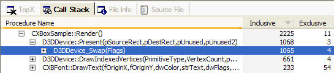
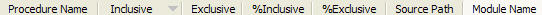

The Call Stack view displays the sampled function calls in a tree view, arranged according to the call stack. Users can explore the call stack by opening or closing the various nodes in the view.

Functions that appear in the same level of the tree are not arranged according to when they are called in the title. Instead, they are arranged in the order the user specifies. By default, functions at the same level are arranged from most sampled to least sampled. Double-clicking on a function launches the Source File View and shows the source code for that function, if it is available.
Just as with the TopX View, the Call Stack view provides seven different ways of sorting the data. The data can be arranged alphabetically, by address, by image name, or by the number of samples recorded for the function. The user can select which way to sort the data by clicking on one of the column headers.
The Call Stack view includes the following columns:

Note No symbols are provided for functions from the xbdm.dll and vx.dxt modules. These are system functions that will never take up more than a fraction of time.